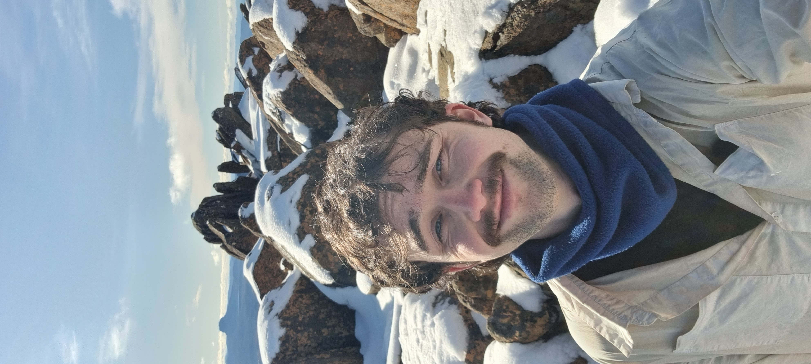
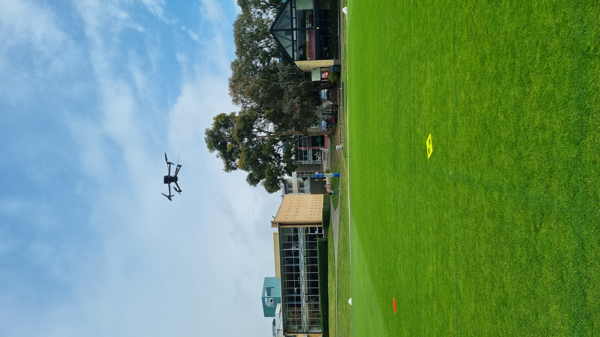
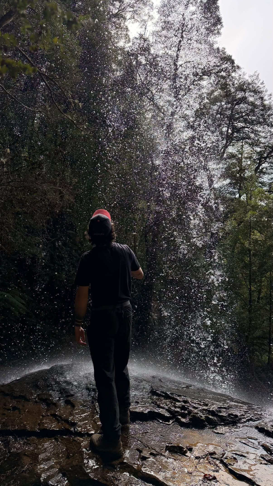

A little about me.
The people, places and curiosity behind my interest in geospatial science.
Hi, I'm Callum!
I'm a Geography and Environmental Science graduate from the University of Tasmania, where I've also been studying a Graduate Certificate in Geographic Information Systems (GIS).
I've always been interested in understanding how the world works, particularly the relationship between people, technology and the natural environment. This interest led me towards geography and eventually GIS, where I've been able to combine my passion for the environment with an interest in the creativity of technology, mapping and spatial problem-solving.


Where science meets creativity.
Throughout my studies, I've worked on a range of projects involving spatial analysis, remote sensing, cartography and RPA photogrammetry. I've gained experience using software such as ArcGIS Pro, QGIS and ENVI, exploring everything from satellite imagery and forest fragmentation to spatial suitability modelling and drone-based mapping.
I've also had the opportunity to gain industry experience with Esk Spatial, a Tasmanian geospatial consultancy, where I've contributed to a commercial resource-sector mapping project. This has given me a valuable insight into how GIS is applied beyond the classroom.
I'm particularly interested in the growing possibilities of remote sensing, satellite technology and remotely piloted aircraft, and how these tools can help us better understand and manage our changing environment.
Always exploring.
Outside of GIS, I enjoy travelling, exploring new places, bouldering, playing sport and getting outdoors whenever I can.
Whether it's exploring somewhere new or spending time in Tasmania's natural landscapes, I've always enjoyed getting out and experiencing the environment firsthand.

Curiosity, mapped.
This portfolio is a collection of some of the projects I've worked on throughout my studies, and I'll continue adding to it as I develop my skills and gain further experience.
Explore my projects